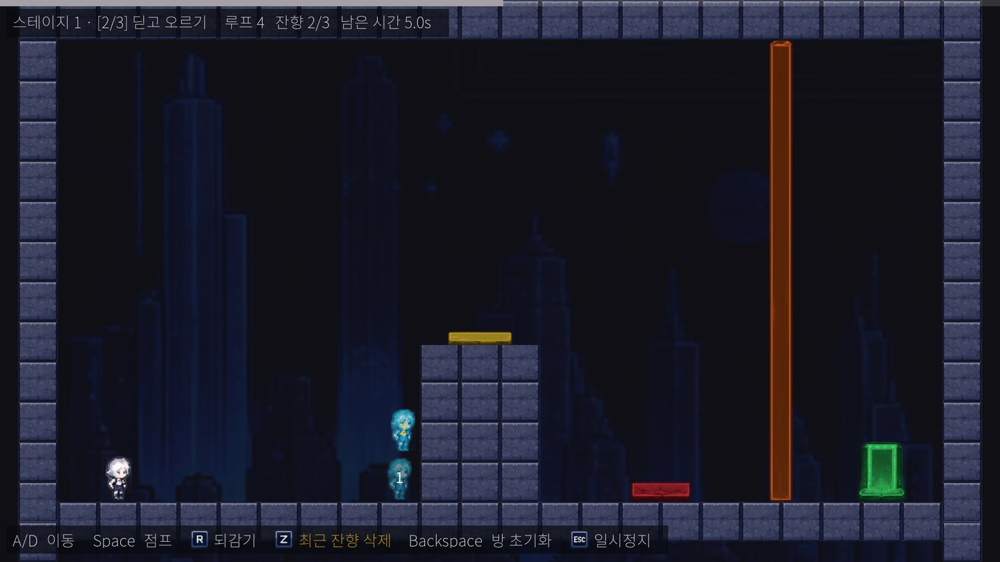
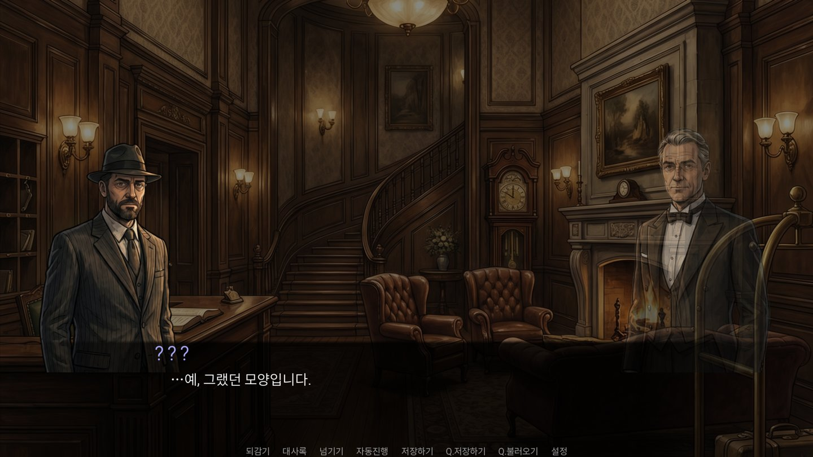

기획과 분석 다시 보기
궁금한 기획과 분석을 골라 의도와 설계 과정을 확인해 보세요.
카드를 누르면 기획 의도와 설계, 작업 내역을 볼 수 있습니다.

PROJECT 01 | 개인 프로젝트, 웹 게임
메모리 엔더
기억을 지우는 장의사가 장례를 거부한 망자를 쫓아, 마지막 장례를 치른다. 쌓아 온 감정을 마지막에 플레이어의 손으로 터뜨리는 구조.
자세히 보기

PROJECT 02 | 5인 팀, Unity
Aftermath
3인 온라인 협동 타워 디펜스. 컨셉 원안을 내고 콘텐츠 기획을 맡아 기획서, 데이터테이블, 요청서 순으로 구현까지 연결했다.
자세히 보기

PROJECT 03 | 개인 프로젝트, Unity 6
잔향 (Echo)
"10초 전의 내가 지금의 동료가 된다", 수치로 정답 루트를 고정한 시간 루프 퍼즐 플랫포머.
자세히 보기

PROJECT 04 | 5인 팀, 비주얼 노벨
WHO AM I?
감정 순서대로 여섯 방을 배치한 추리 비주얼 노벨.
자세히 보기
상용 게임의 시스템과 콘텐츠를 분석하고, 개선안과 새 콘텐츠를 제안합니다. 카드를 누르면 분석과 제안 문서를 볼 수 있습니다.